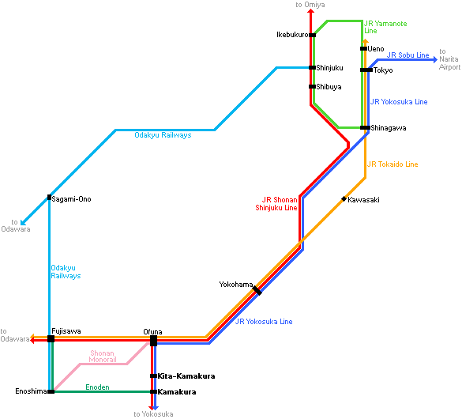

ACNS 2021
19th International Conference on Applied Cryptography and Network Security
Kamakura, Japan
| 21-24 June 2021

Venue
ACNS 2021 will be held at Kamakura. Kamakura (鎌倉市, Kamakura-shi) is a city in Kanagawa Prefecture, Japan. Kamakura was the de facto capital of Japan from 1185 to 1333 as the seat of the Kamakura Shogunate, and became the nation's most populous settlement from 1200 to 1300 during the Kamakura period. Kamakura is a popular domestic tourist destination in Japan as a coastal city with a high number of seasonal festivals, as well as ancient Buddhist and Shinto shrines and temples.
By JR Yokosuka Line
The JR Yokosuka Line connects Tokyo Station directly with Kamakura Station. The one way trip takes just under an hour and costs 940 yen. Along the way, the trains also stop at Shinagawa Station, Yokohama Station and Kita-Kamakura Station among others.
By JR Shonan Shinjuku Line
The JR Shonan Shinjuku Line provides a direct connection between Shinjuku Station and Kamakura Station. The one way trip takes about one hour and costs 940 yen. Only trains bound for Zushi, that is roughly every second train (about two departures per hour), provide a direct connection to Kamakura. Otherwise, a transfer of trains is required at Ofuna Station.
By Odakyu Railways
The cheapest way of visiting Kamakura is by Odakyu's Enoshima Kamakura Free Pass, which includes the round trip from Shinjuku to Kamakura and unlimited usage of the Enoden train for only 1520 yen. Note however, that when using this pass, the journey to Kamakura takes at least 90 minutes, versus about an hour by JR. Furthermore, there is the Hakone Kamakura Pass that also covers Hakone.
Kamakura in Summer

Nearby Hotels
In the City Centre
4-Star
- Kamakura Park Hotel
3-Star
- Hotel WBF Sapporo North Gate
- JR-East Hotel Mets Kamakura Ofuna
- Hotel Kamakura Mori
- Kaihinso Kamakura
- Sotetsu Fresa Inn Kamakura-Ofuna kasamaguchi
Booking can be made through the hotel website directly, or through other travel agent websites such as booking.com, agoda.com, expedia.com, wotif.com, hotels.com, priceline.com, ctrip.com etc. Note that we do not have any discount with any hotel. We recommend conference participants to book their hotel as early as possible. There are many booking options available such that customers do not need to pay until check-in and they can freely cancel the booking up to one or two days before arrival. Conference participants may choose this option to book the hotel first, before getting their required internal approval or visa.